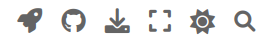

How to use this note#
Each page of this book is a Jupyter Notebook file containing executable python codes. The pages are written with Jupyter Lab and converted to web pages by Jupyter Book v1.0.4. This section explains how to use interactive feature of the book.
Layout#
You are presumably reading this book now. You see three columns. The left column contains the table of contents. You can jump to any chapter and section at any time. Above the table of contents, there is a search box. You can search a word through the entire book.
On the right column, you see the contents of the current page. You can jump within the page by clicking subsection title.
The center column is the actual content of the page. At the upper-right corner, there are four icons. The role of these icons is explained in next subsection.
At the bottom, you see navigation arrows one to the previous page and the other to the next page. Footnotes are also shown at the bottom.
The main document consists of two types of blocks. One is text block and the other is code block. A code block contains a python code and the output of the code appears below the code block You can actually run the code on your computer or at Google Colab as explained below.
There is a square icon at the top of the page. It toggles between full screen and window modes.
Linked references#
There are many references in the documents, references to equation, figure, table, chapter, section, footnote, bibliography citation, … They are all linked to the actual target. If you click the reference, the page jump to the target. For example, an equation number cited in a page is linked to the corresponding equation even it is in a different page. Clicking the cited equation number, the page containing the equation is shown. Some external URLs such as wikipedia are also linked.

Downloading the page#
There is a download button at the upper-right corner. You can download the original Jupyter notebook file (.ipynb) of the current page and the PDF version. Click one of them with the left mouse button, download is supposed to start. However, some web browser instead shows the contents in the browser. If your browser does that, click “.ipynb” with the right mouse button and use “save link as …”. You can run the downloaded Jupyter notebook file on you computer using Jupyter Lab. You can also download any page as PDF in the same way. If you prefer to read it on paper, print the PDF file.
Github#
The github button (octocat) is for the Github connection. It contains two items, repository and open issue. You can view the source files of this book in the github repository and write bug reports and comments which can be viewed at the github repository.
Google Colab#
The rocket icon at the top is known launch button. Currently, there is only one item “Colab” in it. This book is linked to Google Colab. By clicking “Colab”, you open the current page in Google Colab where you can actually edit and run the page. For example, there is an python code in the current page, you can run it on the google computer. Furthermore, you can modify the code and run your own version inside Colab. Since Colab does not have QUTiP installed, you need at ! pip install qutip at the beginning of each page. Unfortunately, it takes some time to install it and when you close the page the package is purged. You need to install it again.
Note
Recent progress in AI technology sometime interferes with my coding. Google AI sometimes issues a warning message suggesting a coding error and proposes a different code. The current AI is not smart enough to distinguish coding tricks I used and errors. Ignore the warning and delete the proposed code offered by Google.
Code block#
Each python code is shown in a box. If the code generates outputs, they are shown in the following box. The contents in the source code box and the output box can be copied to the clipboard and past it to your computer. Move the mouse cursor to the top-right corner of the box. Copy icon  appears. By clicking the icon the whole content of the box is copied to the clipboard on your computer.
appears. By clicking the icon the whole content of the box is copied to the clipboard on your computer.